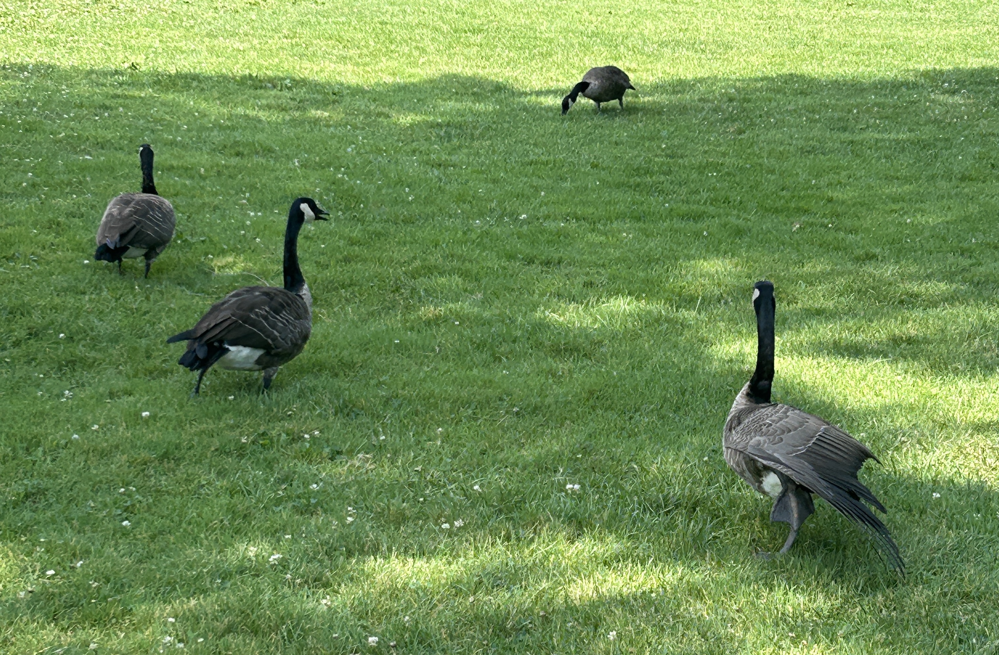
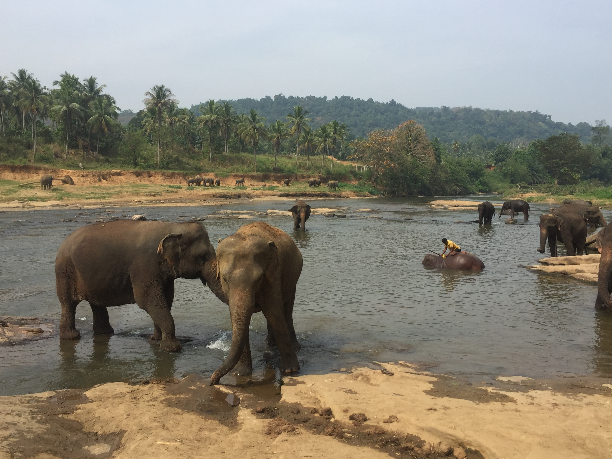
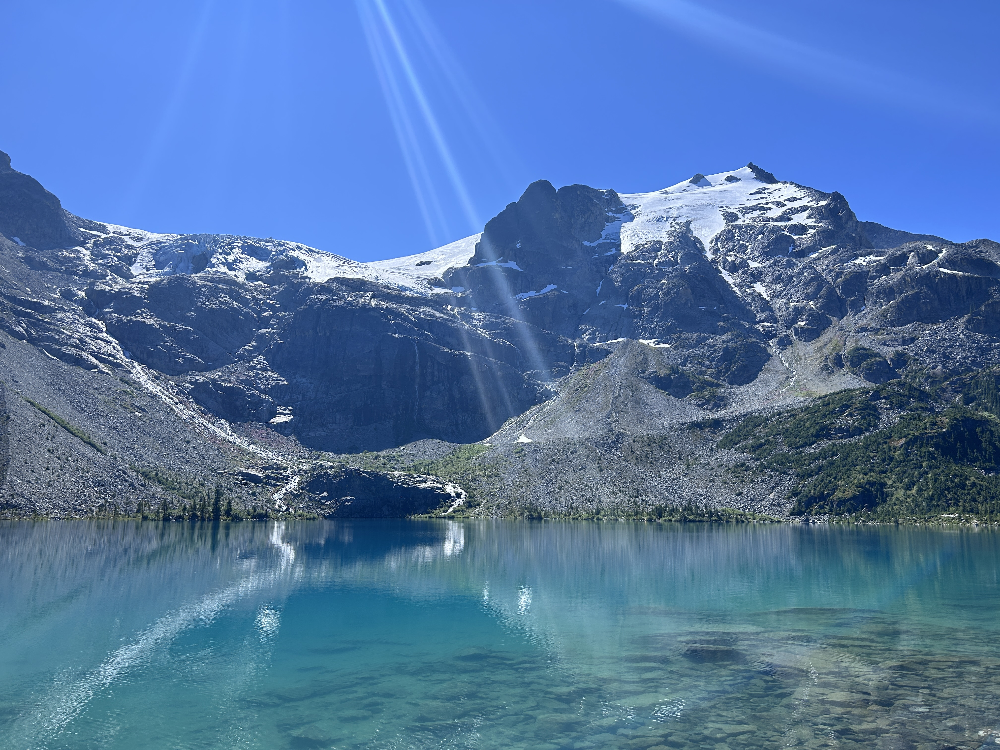
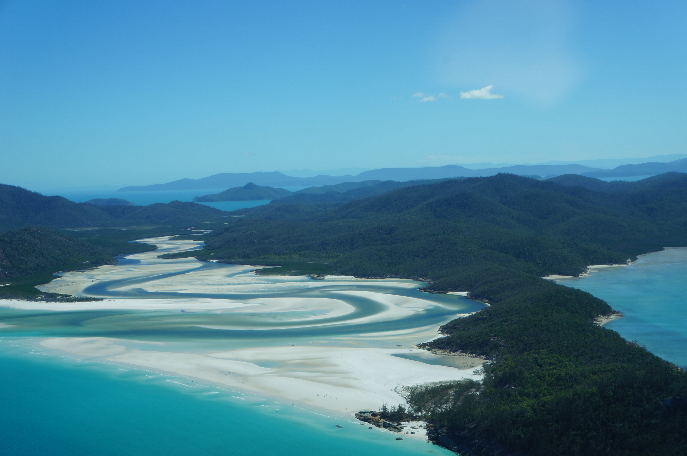
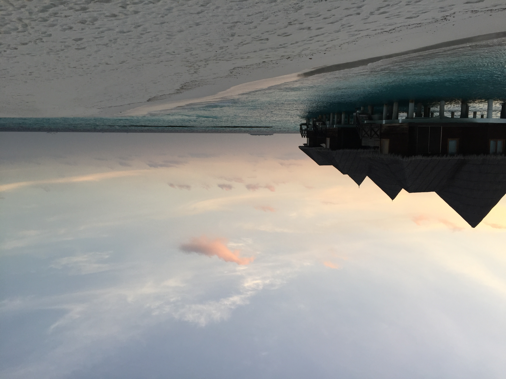

Be Present, Be in the here and now, Live your life in this moment.
Animal Protection
I adore dogs and care deeply about animal welfare. I help to purchase food for the stray cats in my neighborhood. Along with a few neighbors, we've vaccinated almost all stray cats in our neighborhood over the past 2-3 years, ensuring their safety and our peace. I also feed stray dogs when I am travelling, buying them sausages or other food. It's a small effort that brings me lots of joy, and it aligns perfectly with UN Goal 15.5's call to protect biodiversity — even at the small and local level.
Feeding a stray cat under my apartment building.Feeding the stray cats in my neighborhood.Giving sausages to a street dog in Chongqing.
Sustainable Gaming
Sustainable Farming and Living in Stardew Valley
The Game of Stardew Valley.A screenshot of my farm in this game.Harvest time: managing land efficiently.
I seldom play games, but one of my favorites is Stardew Valley. This game actually teaches me about sustainable living. I mimic crop planting and harvesting, I also fish when there is overpopulation of a species, I feed chicks, sheep and cow to get basic ingredients of cooking — just like UN Goal 15's focus on sustainable land use. Through gaming, I've learned that protecting ecosystems (Goal 15.1) isn't just policy — it's daily choices about how we use our resources.
City Management & Farmland in Township
The Game of TownshipPlanning sustainable growth in Township.
Industrial zones beside green fields.Environmental balance in city design.
Another game I enjoy is Township. It shows me how to balance urban development with farmland preservation. Township teaches how careful planning supports sustainable growth, similar to UN Goal 15’s focus on protecting land ecosystems. It’s amazing that such simple games can make big ideas feel real and fun to learn. I really enjoy such kinds of games where I can harvest crops, feed livestock, manage a city or town on my own.
Travel & Nature
Animals I Encountered While Traveling
A kangaroo spotted during my trip to Australia.

A goose enjoying a peaceful afternoon in Western University in Canada.

An elephant in a protected wildlife reserve in Sri Lanka.
During my travels, I’ve had the chance to see animals up close in different natural environments. These moments showed me how important it is to protect wildlife globally. They reflect UN Goal 15.5 — taking action to reduce the degradation of natural habitats and protect endangered species.
Beautiful Natural Environments

Serene mountain and lake view of Joffre Lake in Whistler.

Mountains and river views in DaLi, Yunnan.

Crystal clear waters and beaches in Maldives.
I love exploring diverse landscapes. I’ve seen how beautiful and fragile our earth is, each country has their own picturesque scenic spots. These natural places inspire me to protect land ecosystems (UN Goal 15.1), because the more I travel, the more I realize how connected we are to nature.